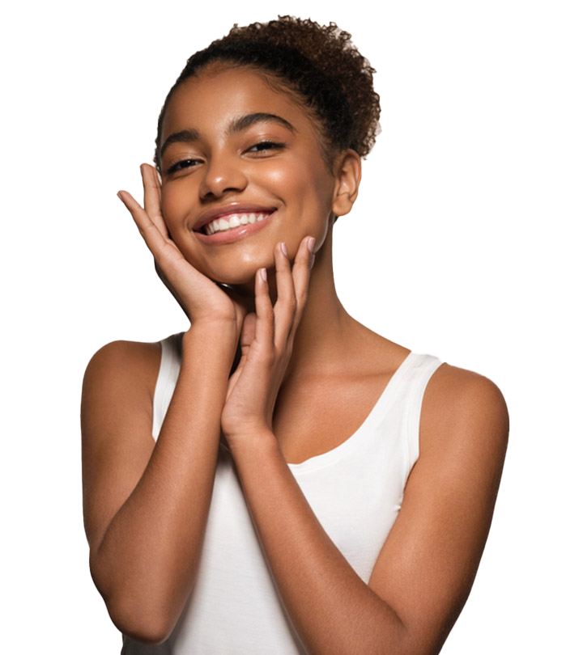
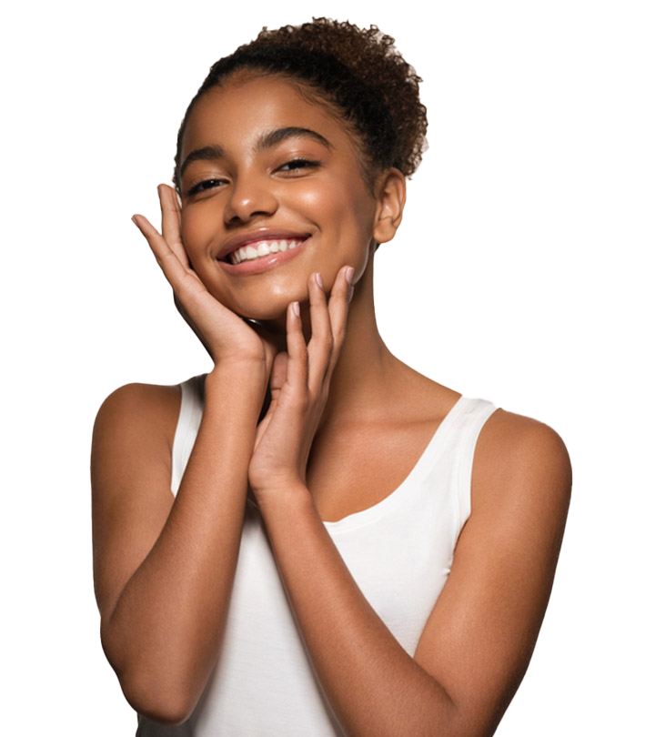

Eco-Friendly Sunscreen
$20.00
Organic Glow Facial Serum

$35.00
Pure Skin Hydrating Cleanser
$25.00
 

"Naturally Beautiful
Naturally You."
At Pure Skin, we're on a mission to make organic skincare the
new standard for beauty. Our products are not only good for
your skin, but also for the environment. We believe that true
beauty comes from nature, and we're dedicated to
harnessing its power to help you look and feel your best. Join
us on our journey to a world of pure, natural beauty.
Learn More>>>
Our Bestsellers
Eco-Friendly Sunscreen
$20.00
Organic Glow Facial Serum
$35.00
Pure Skin Hydrating Cleanser
$25.00
Why choose organic?
Organic skincare products are often made with eco-friendly ingredients and packaging that are biodegradable and sustainable. This means that they are less harmful to the environment than traditional skincare products, which often contain plastic packaging and synthetic ingredients that can take hundreds of years to decompose
Organic skincare products are often made with eco-friendly ingredients and packaging that are biodegradable and sustainable. This means that they are less harmful to the environment than traditional skincare products, which often contain plastic packaging and synthetic ingredients that can take hundreds of years to decompose
Organic skincare products are often made with eco-friendly ingredients and packaging that are biodegradable and sustainable. This means that they are less harmful to the environment than traditional skincare products, which often contain plastic packaging and synthetic ingredients that can take hundreds of years to decompose
What our customers say
"I've been using Pure Skin's organic moisturizer for a few weeks now and I already see a noticeable improvement in the texture and tone of my skin. It feels so soft and supple, and the natural scent is heavenly!"
- Melissa G.
"I've been using Pure Skin's organic moisturizer for a few weeks now and I already see a noticeable improvement in the texture and tone of my skin. It feels so soft and supple, and the natural scent is heavenly!"
Emily R.
"I've been using Pure Skin's organic moisturizer for a few weeks now and I already see a noticeable improvement in the texture and tone of my skin. It feels so soft and supple, and the natural scent is heavenly!"
John T.
See more>>

Pure Skin
1234 Main Street, Suite 567, Anytown, USA
About Us
Home
Blog
Customer Feedback
FAQs
Contact Us
info@pureskin.com
+1 (555) 555-5555
© 2023 Pure Skin. All rights reserved.